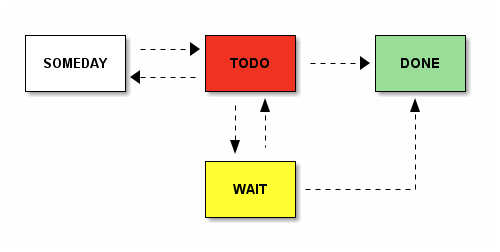
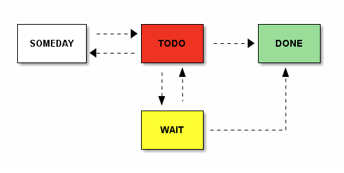

(setq org-ditaa-jar-path
"c:/home/.emacs.d/elisp/org-7.5/contrib/scripts/ditaa.jar")
Table of Contents
1 ditaa

Org version 7.5 with Emacs version 24
Validate XHTML 1.0"c:/home/.emacs.d/elisp/org-7.5/contrib/scripts/ditaa.jar")

Org version 7.5 with Emacs version 24
Validate XHTML 1.0